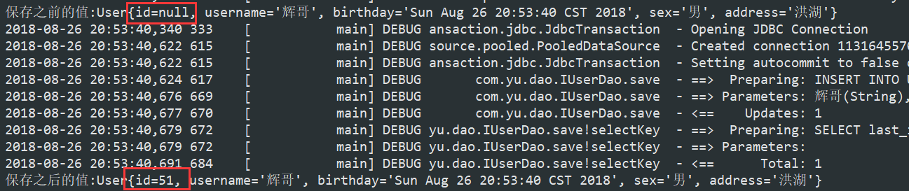

mybatis的CRUD、参数的深入
基于注解的自定义再分析

Mybatis的CRUD-保存操作
- 在IUserDao中编写对应的接口
- 在IUserDao.xml中编写对应的标签
- 定义一个测试类进行测试
IUserDao1
2
3
4
5
6
7
8
9public interface IUserDao {
/**
* @Description: 保存
* @Param: [user]
* @return: void
* @Date: 2018/8/26
*/
void save(User user);
}
IUserDao.xml
1 | <!--保存--> |
test
先进行简单的测试优化
- 将必要的变量提取到全局变量
-@Before关键字：可以在执行任意@Test之前执行 @After关键字：可以在执行任意@Test之后执行，里面需要开启调用commit方法开启事务，不然更新，删除等语句不能有效应用，会被回滚，使操作失效1
2
3
4
5
6
7
8
9
10
11
12
13
14
15
16
17
18
19
20
21
22
23
24
25private InputStream in;
private SqlSession session;
private IUserDao userDao;
@Before
public void setUp() throws Exception {
//1.读取配置文件
in = Resources.getResourceAsStream("SqlMapConfig.xml");
//2.创建SqlSessionFactory工厂
SqlSessionFactoryBuilder builder = new SqlSessionFactoryBuilder();
SqlSessionFactory factory = builder.build(in);
//3.使用工厂生产SqlSession对象
session = factory.openSession();
//4.使用SqlSession创建Dao接口的代理对象
userDao = session.getMapper(IUserDao.class);
}
@After
public void tearDown() throws Exception {
//开启事务
session.commit();
//6.释放资源
session.close();
in.close();
}
测试testsave()1
2
3
4
5
6
7
8
9
10
11/**
* @Description: 保存
* @Param: []
* @return: void
* @Date: 2018/8/26
*/
@Test
public void testsave(){
User user = new User("辉哥",new Date(),"男","洪湖");
userDao.save(user);
}
修改和删除
1 | /** |
1 | <!--更改--> |
1 | /** |
1 | /** |
1 | <!--删除--> |
1 | /** |
模糊查询
1 | /** |
1 | <!--模糊查询--> |
1 | /** |
查询返回一行一列和占位符分析
1 | /** |
1 | <!--查询记录条数--> |
1 | /** |

保存操作的细节-保存数据的id
在保存时我们不插入id是因为id是自动增长的，但是我们怎么获取到插入之后的对应的id呢？
可以使用selectKey标签来获取插入之后的id1
2
3
4
5
6
7<!--保存-->
<insert id="save" parameterType="com.yu.domain.User">
<selectKey keyProperty="id" keyColumn="id" resultType="int" order="AFTER">
SELECT last_insert_id();
</selectKey>
INSERT INTO USER(username,birthday,sex,address) VALUES (#{username},#{birthday},#{sex},#{address});
</insert>
1 | @Test |

参数的深入-使用实体类的包装对象作为查询条件
OGNL表达式:
Object Graphic Navigation Language
对象图导航语言
它是通过对象的取值方法来获取数据。在写法行把get给省略了
比如：我们获取用户的名称
类中的写法：user.getUsername();
OGNL表达式写法:user.username();
mybatis中为什么能直接写username,而不用user.呢:
因为在parameterType中已经提供了属性所属的类，所以此时不需要写对象名
1 | /** |
1 | <select id="findUserByVo" parameterType="com.yu.domain.QueryVo" resultType="com.yu.domain.User"> |
1 | * @Description: 使用QueryVo查询条件 |
返回值深入-解决实体类属性和数据库列名不应对的两种方法
有时候我们的实体类的属性和表的字段名不一致时，会出错
这时我们有两种解决方法
- 修改sql语句，将表字段名as为实体类的属性名即可
- 配置查询结果的列名和实体类的属性名的对应关系
1 | <resultMap id="userMap" type="com.yu.domain.User"> |
dao实现类的使用方式-CRUD
首先，创建impl实现类
实现接口的方法
1 | /** |
test
1 | public class test { |
dao实现类的执行过程分析

Mybatis中使用代理dao的执行过程分析


properties标签的使用及细节
SqlMapconfig.xml中的配置的内容和顺序如下：
1 | -properties（属性） |
引入外部连接数据库信息1
<properties resource="jdbcConfig.properties"></properties>
1 | <!--配置properties |
1 | jdbc.driver=com.mysql.jdbc.Driver |
1 | <dataSource type="POOLED"> |
typeAliases标签和package标签
1 | <!--使用typeAliases设置别名，它只能配置domain中类的别名--> |
1 | <mappers> |